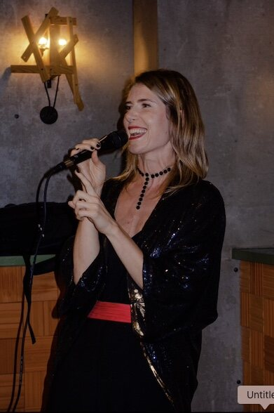
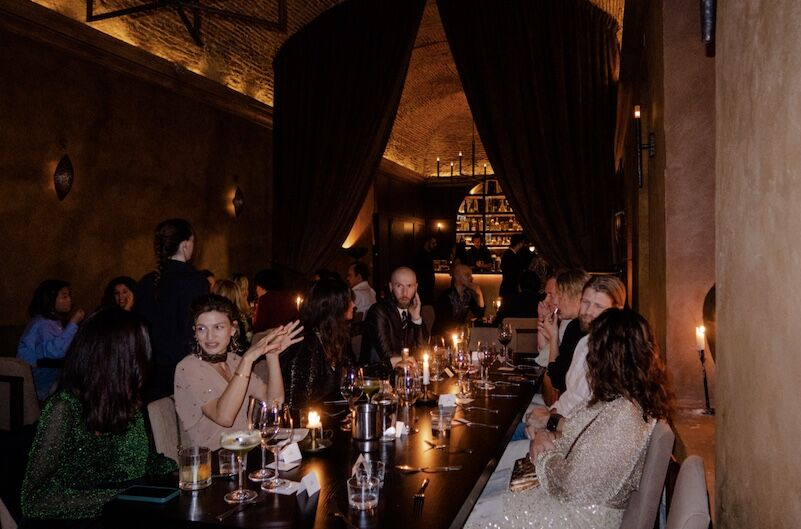
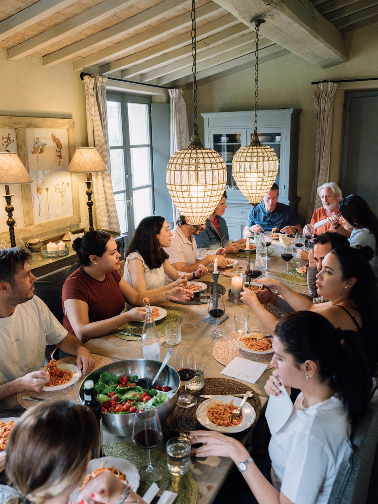
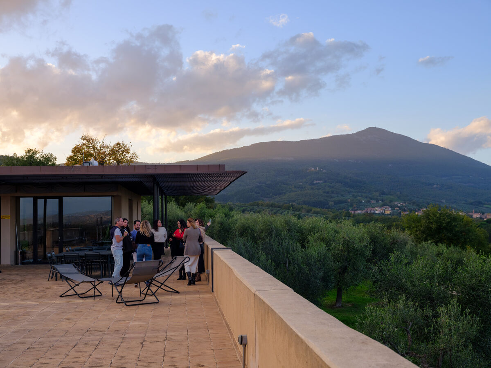
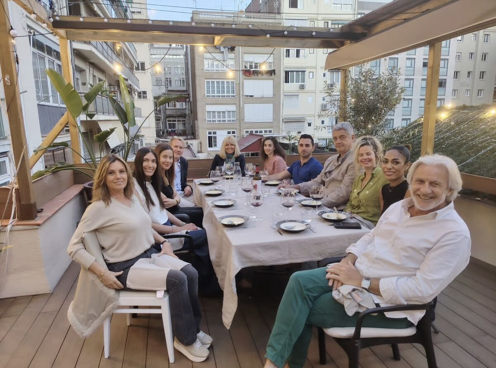
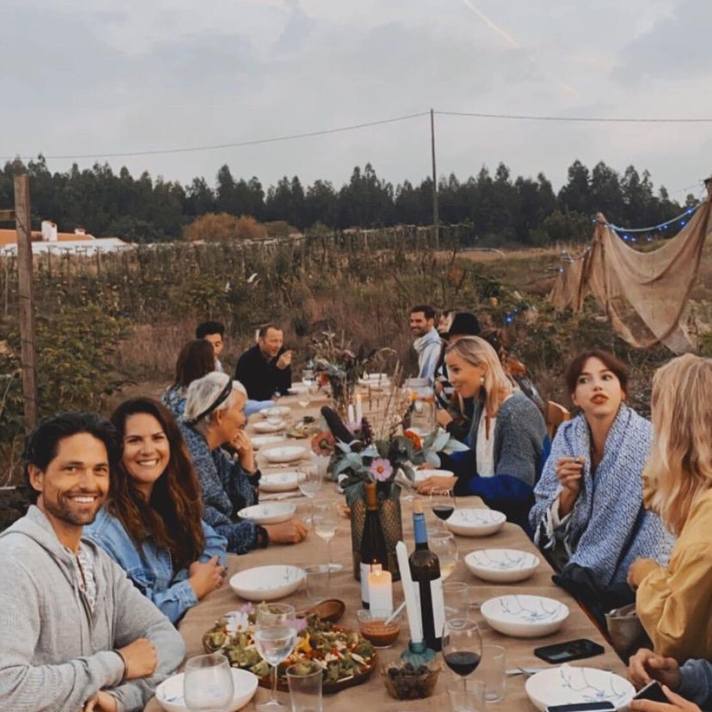
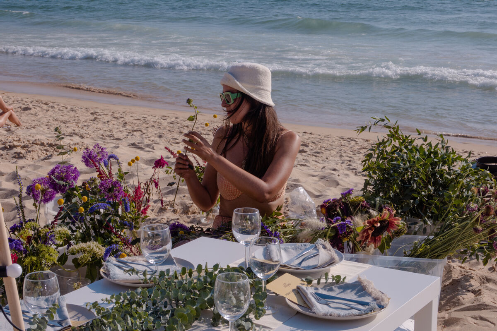
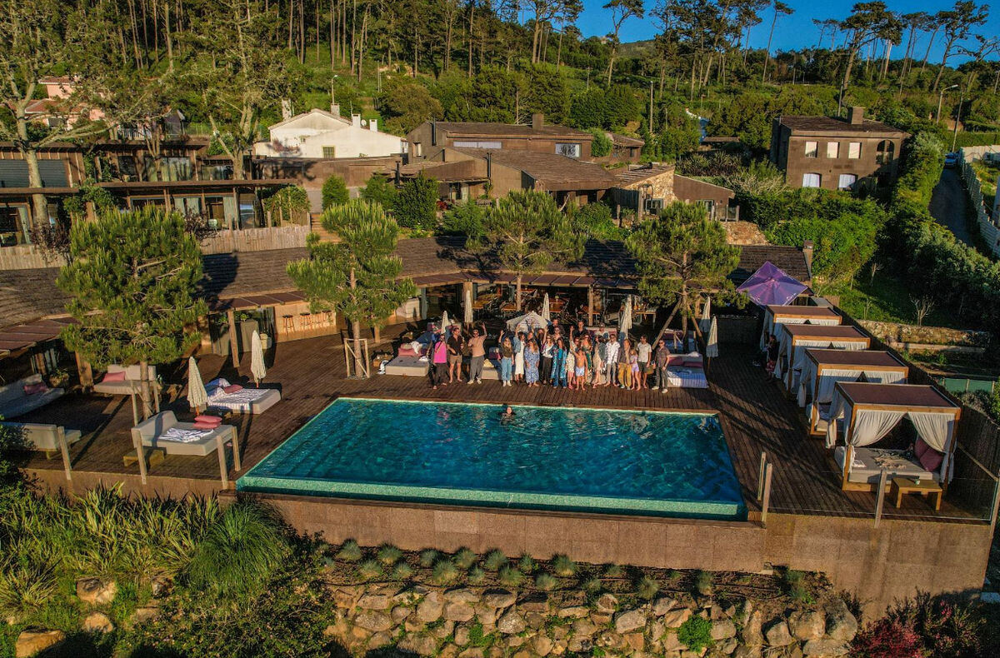
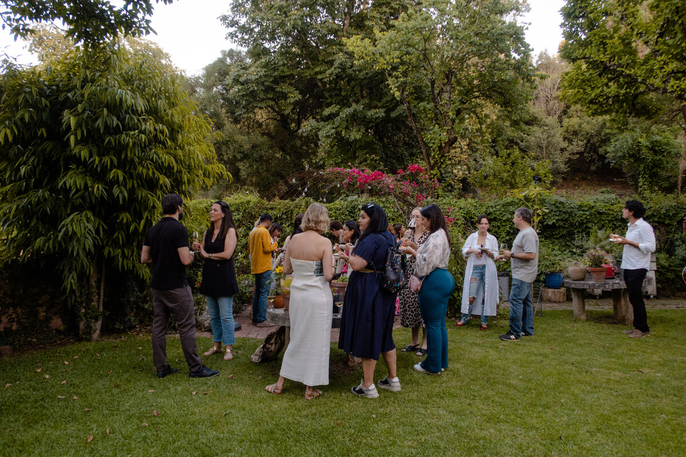

Community Moat · The Mel Edit
As the world moves online and automated, loyalty and belonging become the real competitive advantage. People give their loyalty through real-life experiences, not through tech. I help organizations build that moat. Advisory for a well-curated, well-styled life and the businesses built around it.
Who I work with
Family offices, NGOs, and tech companies who want to grow loyalty and belonging through real community. The through line is the same in every room: relationships are a health intervention, and social isolation carries a mortality risk on par with smoking. When you build genuine belonging, retention and trust follow.
A little about me

I am the founder and CEO of OneThousandClub, a members club in Lisbon, Barcelona, and Madrid with roughly 600 members, built entirely on in-person dinners and curated experiences. Before founding it, I spent more than fifteen years working at the intersection of science, health systems, and human behavior, with roles across the CDC, USAID's President's Malaria Initiative, around six years at the Gates Foundation, and Dimagi in global health tech.
I am a solo female founder who raised venture capital, which places me in the top 2% of solo women founders funded in Europe. What I do is build community as health and business infrastructure, not as a calendar of events. That difference is everything, and it is what turns gatherings into a moat your competitors cannot copy.
How we can work together
You walk away with a clear, expert answer to the question in front of you, and the confidence to act on it.
A focused one-hour call plus an email follow-up with tailored resources, including my OneThousandClub playbooks and prompts. Best for someone who needs a fast, expert second opinion.
Book a spot advisory sessionYou leave with a full blueprint to launch your community, including a recommended tech stack and the automations to run it.
Whether you are creating a community from scratch, launching a membership model, or scaling in-person events so they are replicable, meaningful, and on-brand, we design it end to end across four weekly one-hour calls and five pillars:
You get a partner in the work.
I step in alongside you as your fractional Chief Community Officer, building for a future where loyalty is earned through in-person connection, not through tech. Pricing depends on scope and the level of support you need.
Get in touchRooms I have built








The next step
Book a call and tell me which tier fits where you are. For an ongoing retainer, write to me directly. We will get started from there.
Book a call Email meWarmly, MelMel Miles · Community Moat